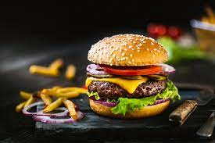

pizza, dish of Italian origin consisting of a flattened disk of bread dough topped with some
combination of olive oil, oregano, tomato, olives, mozzarella or other cheese, and many other
ingredients
BURGER

A hamburger (or burger for short) is a food, typically considered a sandwich, consisting of one or
more cooked patties—usually ground meat, typically beef—placed inside a sliced bread roll or bun.
The patty may be pan fried, grilled, smoked or flame broiled. Hamburgers are often served with
>
SANDWITCH
A sandwich is a food typically consisting of vegetables, sliced cheese or meat, placed on or between
slices of bread, or more generally any dish wherein bread serves as a container or wrapper for
another food type. ... The sandwich is named after its supposed inventor, John Montagu, 4th Earl of
Sandwich.
KERALIYAN
MASALA DOSA
Masala dosa is a variation of the popular South Indian dosa, which has its origins in Tuluva Udupi
cuisine of Karnataka. It is made from rice, lentils, potato, fenugreek, ghee and curry leaves, and
served with chutneys and sambar. ... In South India, preparation of masala dosa varies from city to
city.
KANJI KAPPA
Kappa Kanji is a traditional dinner option in many Kerala houses. It's very light and easy to
digest. Wash rice and green moong dal. Add water and salt pressure cook in cooker till three
whistles in medium flame.
>
POROTTA BEEF
Keralites like Beef and Porotta because it provides ample amount of carbohydrates and protein to the
person who consumes it. The big plus is that the ...
17 answers
· 478 votes: I am a Gujarati, born and bred, but please allow me my two cents. Keralites like
AREBIAN
ALFAM
pizza, dish of Italian origin consisting of a flattened disk of bread dough topped with some
combination of olive oil, oregano, tomato, olives, mozzarella or other cheese, and many other
ingredients
SHAVERMA
A hamburger (or burger for short) is a food, typically considered a sandwich, consisting of one or
more cooked patties—usually ground meat, typically beef—placed inside a sliced bread roll or bun.
The patty may be pan fried, grilled, smoked or flame broiled. Hamburgers are often served with
>
KABSA
A sandwich is a food typically consisting of vegetables, sliced cheese or meat, placed on or between
slices of bread, or more generally any dish wherein bread serves as a container or wrapper for
another food type. ... The sandwich is named after its supposed inventor, John Montagu, 4th Earl of
Sandwich.